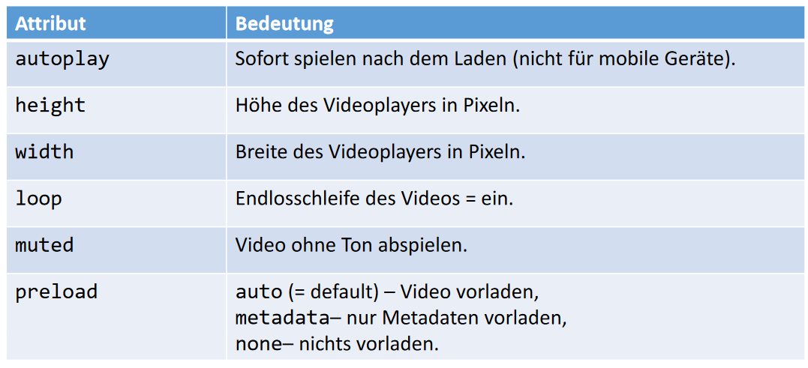

Der Ausgangspunkt dieser Vorlesungsreihe ist das Wissen über funktionsweise von Inhaltseinbildung in HTML5 und Mediendateien
Verständnis von CSS-Regeln wie bei Bildern
Aufbau von Videos und gebräuchliche Videodatentypen
Funktionsweise von BrowserAPIs und CSS-Filtern
Ziele
Vorstellung von:
HTML5 Videoplayer
Videoformate für Webseiten und Streaming
Videos und Canvas-API
Video- und Audio-API
Geschichte der Videos in Webbrowsern - 1
Die Geschichte beginnt etwa 1996
Zuerst waren Applikationen mit Plug-Ins im Webbrowser für die Videowiedergabe erforderlich
von RealNetworks: RealPlayer (1997)
von Apple: QuickTime 4 (1999)
von Microsoft: Windows Media Player
Die Formate richteten sich nach den Playern
Das Platzieren der Videos im Kontext war z.B. mit QuickTime unmöglich, da die Darstellung in einem Popup-Fenster erfolgte
Geschichte der Videos in Webbrowsern - 2
Später kam dann die Flash-Technologie von Macromedia / Adobe für Webbrowser,
die ursprünglich von Macromedia (Markenname Shockwave) vorangetrieben
wurde
Hier waren ab 1997 der Shockwave-Player oder ab 2005 der Adobe Flash Player die
angesagten Plug-Ins
Formate waren SWF (mit Ziffern für die Formatversionen hinten dran, seit 1997),
später FLV als Streamingformat (seit 2002)
Geschichte der Videos in Webbrowsern - 3
2010 kündigte Apple an, den Flash Player auf Apple-Produkten nicht mehr native
anzubieten
Ende 2011 wurde dann die Weiterentwicklung von Flash für mobile Geräte
eingestellt
Es gibt den Flash Player meist noch als App zum Nachinstallieren, aber in veralteter
Version (Problematisch für Systemsicherheit)
Das Element <video> wurde 2007 von Opera für HTML5 vorgeschlagen
Inzwischen wird es von allen aktuellen Webbrowsern grundlegend unterstützt
let videoSupportOgg = !!(document.createElement(′video′).canPlayType(′video/ogg; codecs=″theora″′).replace(/^no$/,′′););
let videoSupportH264 = !!(document.createElement(′video′).canPlayType(′video/mp4; codecs=″avc1.42E01E″′).replace(/^no$/,′′););
var videoSupportWebM =!!(document.createElement(′video′).canPlayType(′video/webm;
codecs=″vp8,vorbis″′).replace(/^no$/,′′););
Format MP4
MP4, bzw. MPEG-4 Teil 14, ist die Weiterentwicklung des Quicktime-Formats. Container-Format
Videospur: H.264 / Audiospur: AAC
Beide Codecs sind patentrechtlich geschützt und Lizenzgebührenpflichtig
Videos lassen sich einfach mittels <video>-Elements einbinden
Optional kann man sie durch viele Attribute, mögliche Unterelemente, JavaScript-Methoden und Ereignisse für den Ereignismanager genauer konfigurieren
Video einbinden - Syntax - 2
// Das Bild zur Vorschau wird beim Laden angezeigt.
<video src=″videofile.mp4″ poster=″vorschau.jpg″ controls>
Nachricht, falls der Browser das Videoelement nicht
unterstützt.
</video>
Video einbinden - Syntax - 3

Video einbinden - Syntax - 4
<video controls>
<source src=″videofile.webm″ type=″video/webm″ />
<source src=″videofile.ogg″ type=″video/ogg″ />
<source src=″videofile.mp4″ type=″video/mp4″ />
The <code>video</code> element is not supported.
</video>
Der Browser wählt automatisch das Format aus, welches er am besten unterstützt
Zusätzlich kann noch ein Attribut media hinzugefügt werden, welches das
Zielmedium angibt
Es gibt 30 JavaScript-Eigenschaften der Media JavaScript API, 26 Ereignisse, 5 Methoden
Tracks einbinden - Syntax - 1
Mit dem Unterelement <track> können Audio- und Video-Elementen Untertitel,
Beschreibungen für die Ausgabe per Screenreader, Szenenüberschriften etc. zum Teil
mehrsprachig mitgegeben werden
WEBVTT – Beispiel
14
00:01:14.815 --> 00:01:18.114
What? - Where are we now?
15
00:01:18.171 --> 00:01:20.991
This is big bat country.
16
00:01:21.058 --> 00:01:23.868
[ Bats Screeching ] - They won't get in your hair. They're after the bugs.
Wenn keine der angebotenen Videovarianten über das Element <video> greift, muss man Fallback-Lösungen anbieten, z.B.:
<video controls>
<source src="videofile.mp4" type="video/mp4">
</source> <!-- weitere Quellen -->
<a href="videofile.mp4">
<img src="dynamicsearch.jpg" alt="Video"> </a>
<p>Click image to play a video demo.</p>
</video>
Der Durchbruch der Einbettung und Veränderung von Video und Audio in der Canvas API war die Idee des Zugriffes auf den Frame-Buffer einmal geladener Dateien